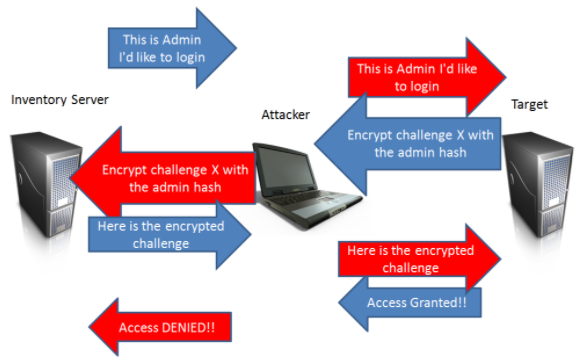

NTLM/SMB Relay attack
NTLM relaying is an attack when we relay attempted NTLMv2
authentication against our machine to another system(
instead
of extract from pcap file and crack it) in order to obtain unauthorized access to this machine.
The
NTLM Relay attack borrows the name from the tool released back in 2001 by Sir Dystic, called SMBRelay.
NTLM
Relays are the network version of Pass the Hash attacks
The scope of this attack is enter in the
Target server using the credentials of
another
machine in the network.
This attack WORKS ONLY if the
user, who is
trying to authenticate on the
attacker machine, has administrative privileges on
the
TargetHow it
works: • The
attacker (A) selects the
target (T) server and waits until
someone(S) in
the network tries to authenticate to his(attacker) machine
◇ To do that we can also use Responder,
as
seen here waiting for misspelled NetBIOS or LLMNR queries on the local network
• When a
machine tries to authenticate on the
attacker,
it sends the authentication attempt to the selected
target• The
target creates the challenge and sends it back to the
attacker• The
attacker sends the challenge
to the
machine that initiated the connection
• The
machine encrypts the challenge with the password hash and sends it back to the
attacker• The
attacker sends the encrypted
challenge to the
target and authenticates itself
When this attack is
useful?If the hash obtained in the chapters
◇
redirect
to Attacker's SMB share using UNC path to steal NTLM credential ◇
LLMNR
& NetBIOS NS Spoofing/Poisoning for capture NTLM hashes (misspelled share queries)are to hard to
crack, we can relaying them by using NTLM Relay Attack
Bibliography:
•
https://en.hackndo.com/ntlm-relay/